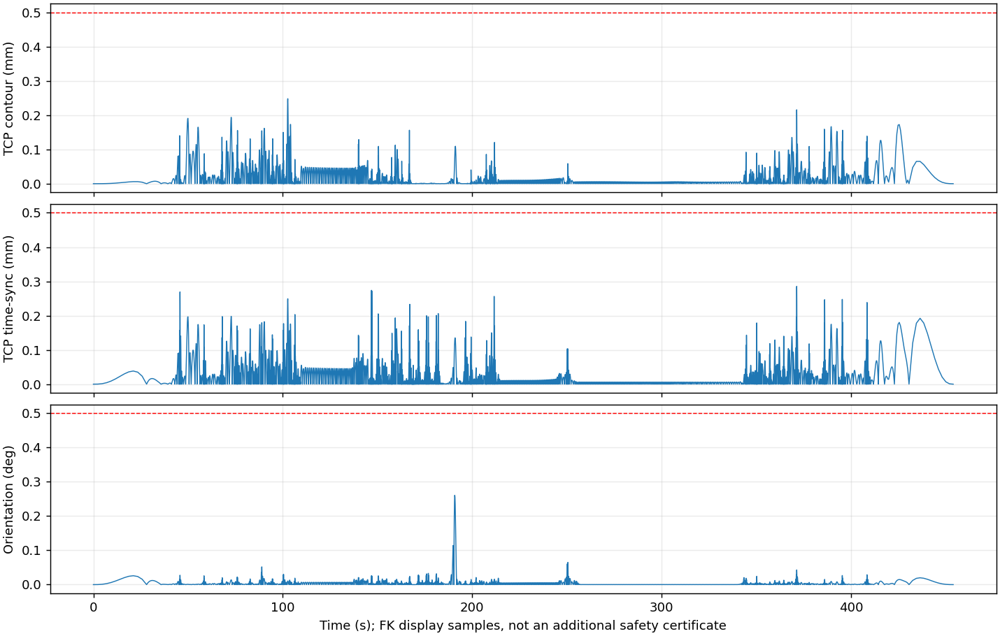

executionReady=false。以下轨迹、曲线及报告仅供离线预演和分析，不含执行许可。
| Weld velocity source (seed before full-task optimization) | Not recorded |
| Non-optimal C fallback (NOT a D optimizer success) | Not recorded |
| TCP contour max / mm | 0.24849783055586944 |
| TCP time-sync max / mm | 0.2863160538556576 |
| TCP orientation max / deg | 0.26142918303371393 |
| Joint velocity max / rad/s | 0.0847825932551002 |
| Joint acceleration max / rad/s² | 0.1631066894890289 |
| Full collision samples | 63701 |
| Collision PASS | True |
| Joint limits PASS | True |
| Version checks PASS | True |
| Duration / s | 454.01189591844076 |
| Segment-interior jerk max / rad/s³ | 0.6204928818010014 |
| Segment-interior jerk RMS / rad/s³ | 0.0605215610604804 |
| Minimum sampled positive clearance / mm (NOT physical safety margin) | 0.3057900082671714 |
{
"interface_c2_pass": true,
"interface_max_acceleration_jump_rad_s2": 9.71445146547012e-17,
"all_nodes_c2_guaranteed": false,
"all_nodes_max_acceleration_jump_rad_s2": 0.0001357321500108876,
"note": "C2 enforced at task-segment joins only; other node acceleration jumps are reported, not hidden."
}
分段内jerk与节点加速度跳变分别统计；不能将段接口C²通过解释为全程C²连续。

图表为独立FK显示采样；验收指标来自完整控制器等价验证。实际UR伺服响应尚未验收。